Open mobility data for functional-area maps
What each source leaves out, and how much of the result is scale, contiguity and algorithm.
Marija Ercegovac, Rockup
FOSS4G 2026, Hiroshima, 3 September 2026. Talk title: Eurostat vs OSM vs Census: Choosing Open Mobility Data for Urban Function Maps.
This deck is version 2. Every number in it is written by the pipeline at github.com/m-erts/urban-functional-maps.
| Eurostat-type grid and presence statistics | OpenStreetMap | Census and register counts | Method, reference |
Each open source publishes some of three things
Pairs, purpose, time. The missing one is not an error in the file. It is found in the code list and the definitions.
| Source | Origin-destination pairs | Trip purpose | Time of day or week | What the name suggests |
|---|---|---|---|---|
| Census, England and Wales 2011, 2021 | full matrix, 7,264 units | work | none | a commuting matrix. In 2021 45 % of its rows are people at home |
| Census, Serbia 2022 | none: 4 nested bands | work; education as one number | none | "daily migrations". A migrant leaves the settlement, not the municipality |
| Register, Netherlands 2014 | 40 x 40 regions of 1970 | work | none | pairs. At the resolution of the answer |
| People-flow panel, Japan 2019 to 2021 | none: 4 nested rings | none: presence | month, day type, day or night | "From-To". It holds no origins, and it is not operator data |
| OSM public GPS traces | trajectories of contributors | none | timestamps | 200,000 points. 2,395 minutes of recording |
Eurostat statistics from mobile network operators: a published method and open reference code (Multi-MNO), no cross-country dataset. Spain publishes hourly operator matrices; not processed here.
The sources on six axes
| Source | Spatial resolution | Temporal lag | Semantic depth | Licence | MAUP sensitivity | Cost to compute |
|---|---|---|---|---|---|---|
| Census pairs, England and Wales | 7,264 polygons of 5,000 to 15,000 residents | 2.6 years (census March 2021, file October 2023) | work; place-of-work indicator of 4 categories | OGL v3 | measured: scale gives 19 % of the score at MSOA, 69 % at district level | 1.8 M pairs; permutation 20 ms; contiguous partition 0.2 s |
| Census bands, Serbia | 168 polygons, 4 destination bands | 1.8 years | work; education | SORS terms | not testable, one level; 8 units are 0 by definition | seconds |
| Register pairs, Netherlands | 40 regions | 1.8 years | jobs; sex, age | CC BY 4.0 | not testable, pairs exist only between the basins of 1970 | 1,600 pairs |
| Presence panel, Japan | 1 km mesh, 6,763 cells | 1 month while it ran; ends December 2021 | no purpose; 3 x 3 time slots; 4 residence rings | Gov. of Japan Standard Terms 2.0 | regular grid; class shares move with the threshold: mixed 17 to 65 % | 1.07 M rows; 24 HDBSCAN runs 4 s |
| OSM GPS traces | points, to H3 resolution 8 | none at upload; median year 2014 to 2022 | position, time | ODbL | not measured; 50 % of points in one cell | 40 requests per window |
| GHS-POP, GHS-SMOD grid | 100 m, 1 km | epoch 2030 is a projection | population; 8 settlement classes | CC BY 4.0 | measured: r = -0.28 by area, -0.02 by population | 75 MB tile; 3 s |
Test 1. Read the code list
In 2021 people who work at home or have no fixed workplace are rows with workplace = residence. They sit on the diagonal of the matrix.
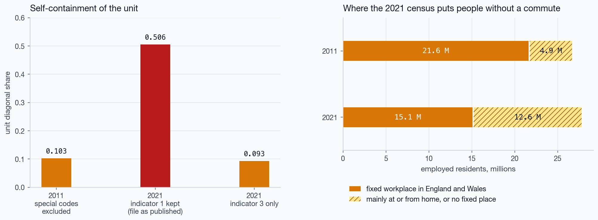
| Matrix | people | diagonal |
|---|---|---|
| 2011, special codes out | 21,625,060 | 0.103 |
| 2021, as published | 15.1 M + 12.6 M | 0.506 |
| 2021, indicator 3 only | 15,085,108 | 0.093 |
The file as published says that local working rose fivefold. With the same treatment in both years it fell from 0.103 to 0.093.
Census day was 21 March 2021, in a lockdown. The 2021 matrix is used here to study coding and method, not commuting.
Test 2. Shuffle. The null has a closed form
Keep the sizes of the areas, permute the labels of the units. What survives is produced by the number and sizes of the areas alone.
| England and Wales 2021 | MSOA | district |
|---|---|---|
| units | 7,264 | 331 |
| d | 0.093 | 0.551 |
| areas, same rules | 235 | 9 |
| self-containment | 0.695 | 0.947 |
| null, 1,000 permutations | 0.130 ± 0.001 | 0.657 ± 0.008 |
| null, closed form | 0.130 | n/a |
| share of the score that is scale | 19 % | 69 % |
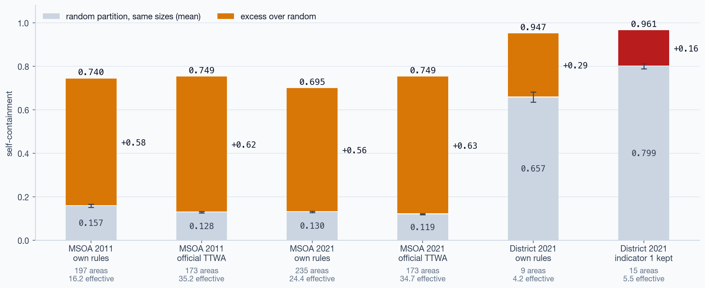
Most of the score is scale and contiguity
A second null keeps contiguity: 300 random contiguous partitions with the same sizes. What is left is what the position of the boundaries adds.
197 areas
173 areas
235 areas
173 areas
Raw scores of the official areas and of the heuristic differ by 0.749 − 0.740 in 2011. Their placement parts differ by 0.205 − 0.175. The raw score hides most of the difference between two algorithms.
Random contiguous partitions reach 0.565 (maximum 0.586) in 2021. Region growing misses the sizes of the largest areas, so the contiguity part is if anything understated.
Test 3. Compare the map, not the count
One matrix, one published validity criterion, three maps. The criterion says when an area is acceptable. It does not say how to repair one that is not.
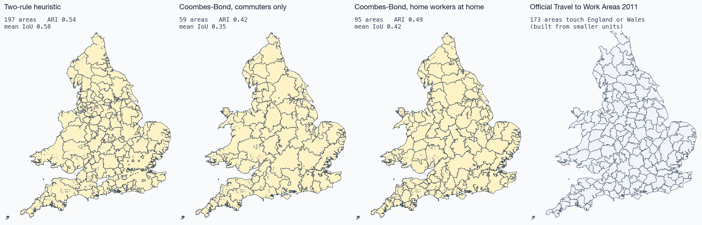
The error matrix, counted in people
C[a, b] = employed residents who are in delimited area a and in official area b. Everything else is read from it.
omission(b) = 1 − C[a*,b] / C[·,b]
commission(b) = 1 − C[a*,b] / C[a*,·] a* is the delimited area with the highest IoU for official area b. Adjusted Rand index and V-measure come from the same table.
| Partition | areas | ARI | mean IoU | by km² |
|---|---|---|---|---|
| 2011, own rules | 197 | 0.54 | 0.58 | 0.44 |
| 2011, rule by greedy merge | 67 | 0.46 | 0.48 | 0.37 |
| 2011, rule by dissolution | 61 | 0.43 | 0.44 | 0.33 |
| 2021, own rules | 235 | 0.64 | 0.60 | 0.43 |
| 2021, rule by greedy merge | 66 | 0.49 | 0.47 | 0.35 |
| 2021, rule by dissolution | 46 | 0.17 | 0.28 | 0.26 |
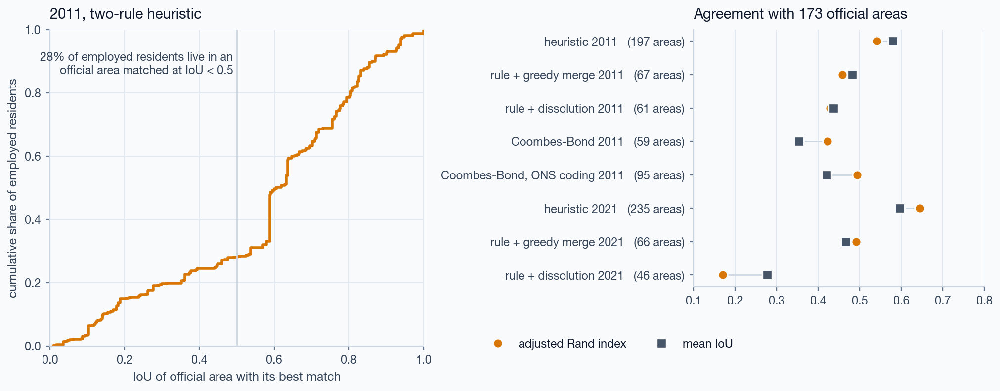
Enforcing the published rule moves the map away from the official one. Under greedy merge the London area holds 6.1 million employed residents, 28 % of England and Wales.
The same count from different rules
The number of areas is fixed by two of the three thresholds. 4 settings of those two give about 235 areas.
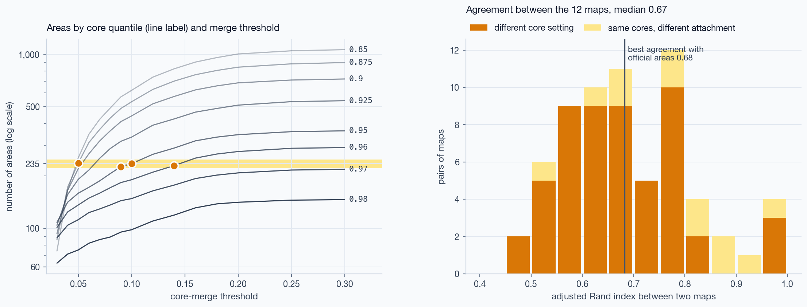
| 12 maps with 223 to 247 areas | min | median | max |
|---|---|---|---|
| agreement with each other, ARI | 0.46 | 0.67 | 0.98 |
| agreement with official areas, ARI | 0.54 | 0.68 | |
| self-containment | 0.641 | 0.737 | |
| areas over the whole grid of 120 | 63 | 1,063 |
Where the boundaries diverge: six cases, one by one
Chosen by rule from the 2021 matrix, not by eye. The next six slides take them in turn.
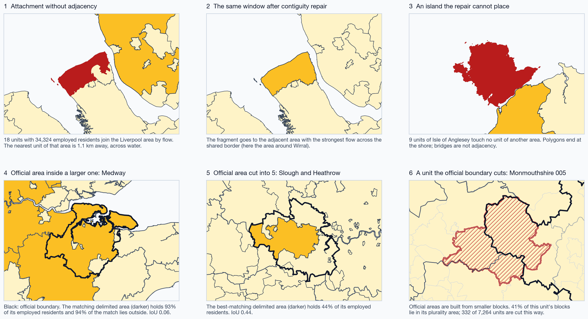
Case 1. Attachment without adjacency
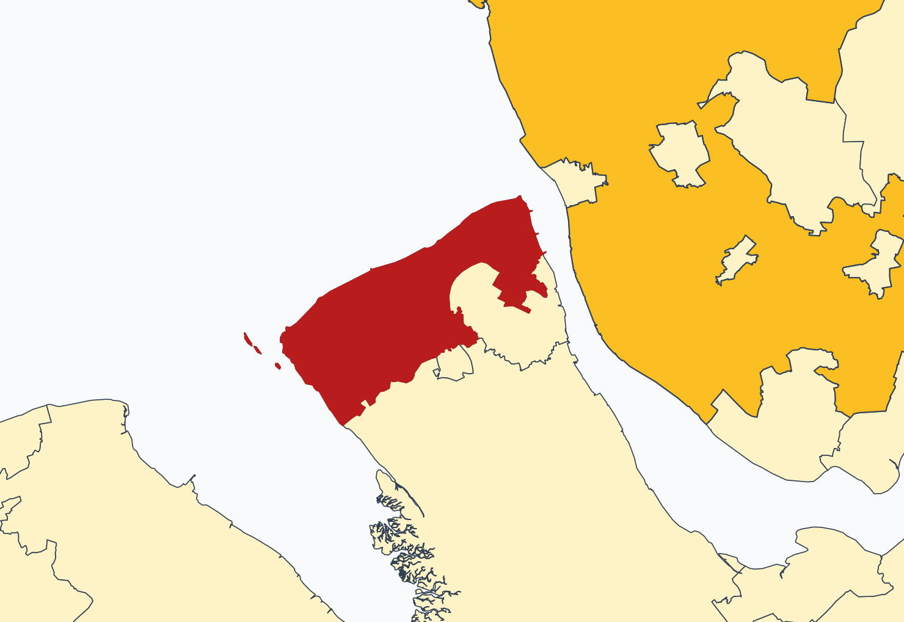
- RuleA unit joins the area that receives the largest share of its outgoing commuters, if that share is 15 % or more. The rule looks at flows only.
- Result18 units with 34,324 employed residents join the Liverpool area. The nearest unit of that area is 1.1 km away, across water.
- Extent26 of 235 areas are in more than one piece; 79 units are cut off.
- ReadingThe polygons do not cross the river. A tunnel does. By flows the fragment belongs where the rule put it.
Case 2. The repair
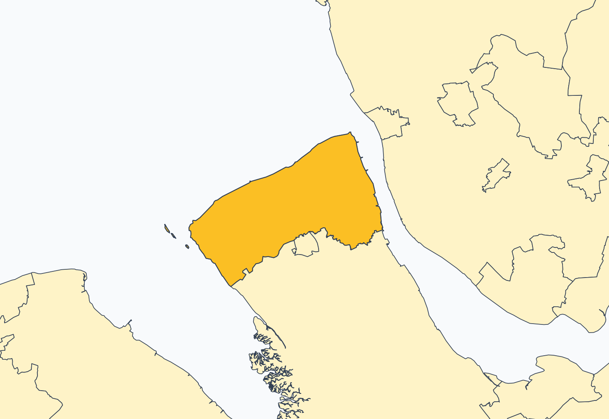
- RuleIn each area the piece that holds the core stays. Every other piece goes to the adjacent area with the largest two-way flow across the shared border. Adjacency is queen adjacency of the polygons.
- ResultThe fragment now belongs to the area around Wirral.
- CostSelf-containment moves from 0.695 to 0.696.
- ReadingThe repair gives a map that can be drawn. In this case it replaces a true functional link with a polygon rule. Both versions are in the tables.
Case 3. An island the repair cannot place
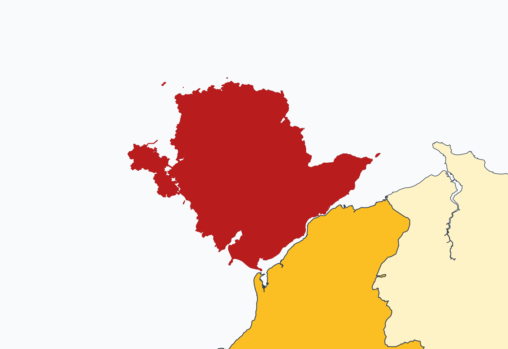
- RuleA piece with no neighbour in another area has nowhere to go. It stays and is reported.
- Result9 units of Isle of Anglesey, 17,948 employed residents.
- Extent3 areas keep such a piece after the repair, 13 units in all.
- ReadingPolygons end at the shore; two bridges do not count as adjacency. The list of islands is an output of the pipeline, not a defect to hide.
Case 4. An official area inside a larger one
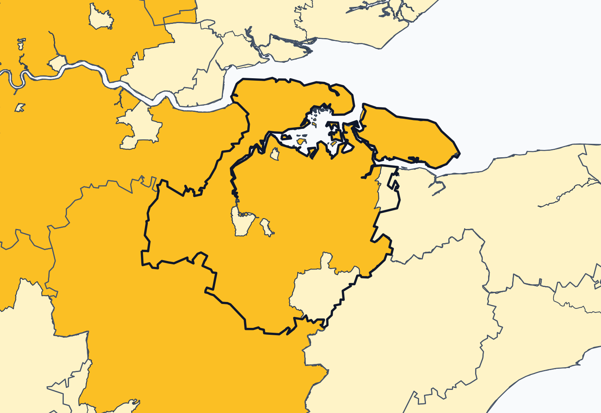
- OfficialMedway, 166,407 employed residents (black line).
- MatchThe delimited area that starts at City of London (darker amber).
- Error matrixIoU 0.06. Omission 7 %: nearly all of the official area is inside the match. Commission 94 %: nearly all of the match is outside it.
- ReadingThe heuristic has no lower bound on self-containment of what it attaches. One strong core takes its whole commuter belt, other labour markets included.
Case 5. An official area cut into several
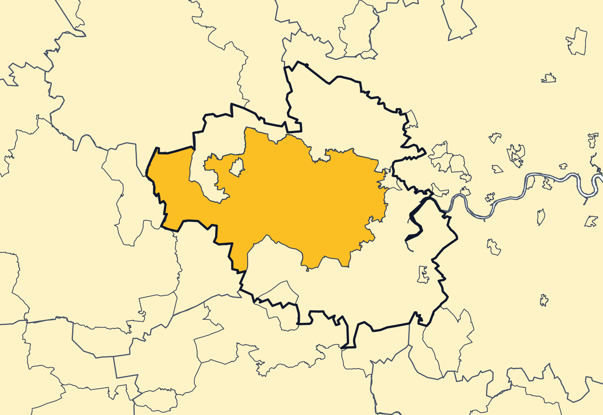
- OfficialSlough and Heathrow, 401,486 employed residents (black line).
- Match5 delimited areas hold parts of it. The best one holds 44 % of its employed residents: omission 0.56.
- Error matrixIoU 0.44. Commission is 0: the match lies inside the official area.
- ReadingSeveral cores pass the inflow quantile here and do not exchange 10 % of their outflow, so they are not merged. The count of areas rises where employment is polycentric.
Case 6. A unit the official boundary cuts
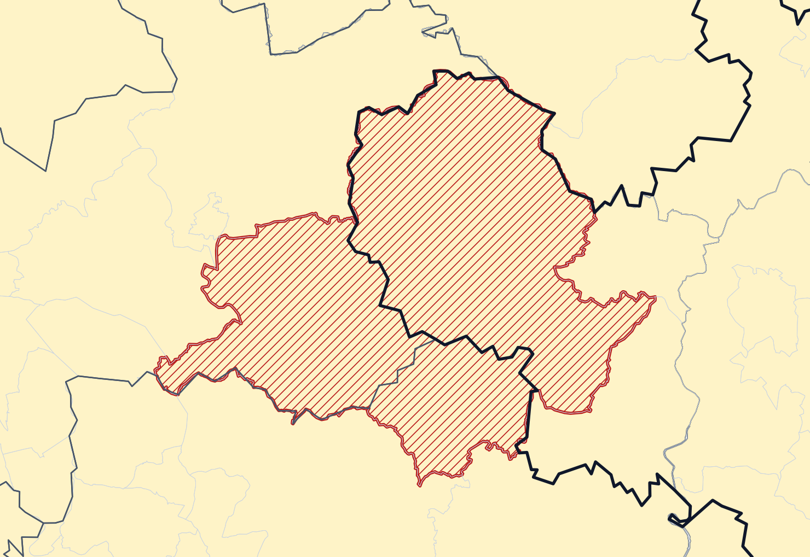
- CauseOfficial areas are built from blocks smaller than the units of the open matrix.
- ResultMonmouthshire 005: 41 % of its blocks lie in the official area it is assigned to (hatched unit, black line).
- Extent332 of 7,264 units are cut by an official boundary.
- ReadingNo partition of these units can reproduce the official map. Agreement values carry this error and cannot reach 1. This is the zoning problem at the level of the unit.
Serbia. Bands instead of pairs
795,779 daily migrant workers in 168 municipalities. Delimitation is not possible. Band self-containment is, if the definition is respected.
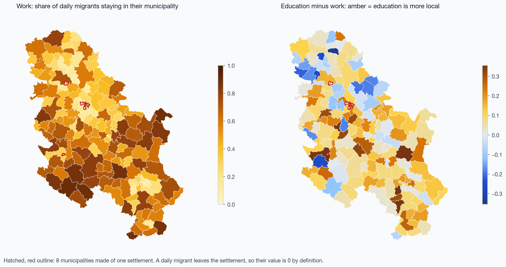
| value | |
|---|---|
| stay in their municipality | 50.3 % |
| median, work | 0.53 |
| median, education | 0.65 |
| median of municipal differences | +0.08 |
| correlation, work and education | 0.80 |
| municipalities of one settlement: value 0 by definition | 8 |
| polygons joined, one to one | 168 |
Weight the grid by people, not by pixels
Degree of urbanisation of a municipality from GHS-SMOD classes, weighted by GHS-POP population. The area-weighted share is the control.
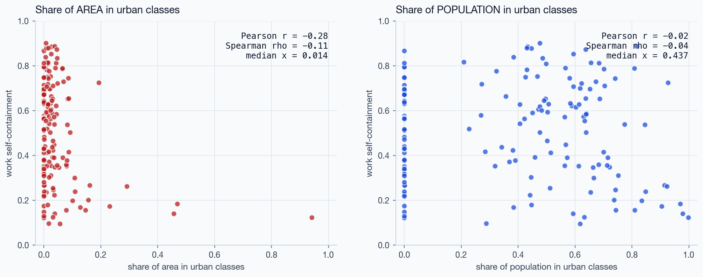
| Work self-containment against urban share | Pearson | Spearman |
|---|---|---|
| share of area | -0.28 | -0.11 |
| share of population | -0.02 | -0.04 |
| Education minus work | ||
| share of area | +0.17 | |
| share of population | +0.03 | |
| median share of area in urban classes | 0.014 |
Netherlands. Pairs at the resolution of the answer
7.54 million jobs between 40 regions that were drawn in 1970 as commuter basins.
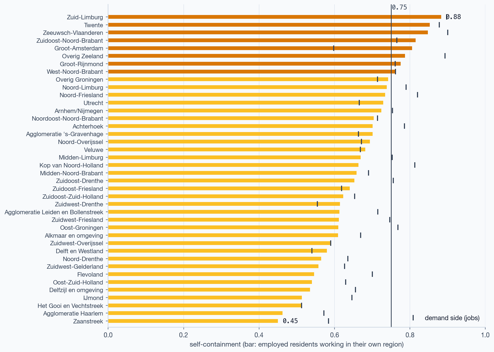
| supply | two-sided | |
|---|---|---|
| median self-containment | 0.66 | 0.66 |
| regions at 0.75 or more | 20 % | 17.5 % |
| most open: Zaanstreek | 0.45 | |
| most closed: Zuid-Limburg | 0.88 | |
| areas delimited on 40 nodes | 2 |
2 areas is a property of the table, not of the country. Basins cannot be redrawn from flows published only between the basins of 1970. The successor table publishes pairs of municipalities.
Japan. Time of day, and nothing else
Presence per 1 km cell by month, day type, day or night. A panel of smartphone applications, expanded to population by the provider. Not operator data.
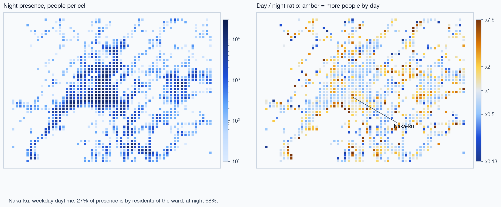
| value | |
|---|---|
| Naka-ku, weekday day: presence by residents of the ward | 27 % |
| the same at night | 68 % |
| cells with more people by day | 43 % |
| yearly totals 2019 to 2021 agree within | 0.11 % |
| local share, weekday day, 2019 | 0.632 |
| 2020 | 0.677 |
| 2021 | 0.681 |
Test 4. Ask whether there are classes before naming them
4,011 cells, four time slots, two axes. One cloud. The lines are the declared thresholds at a ratio of 1.5.
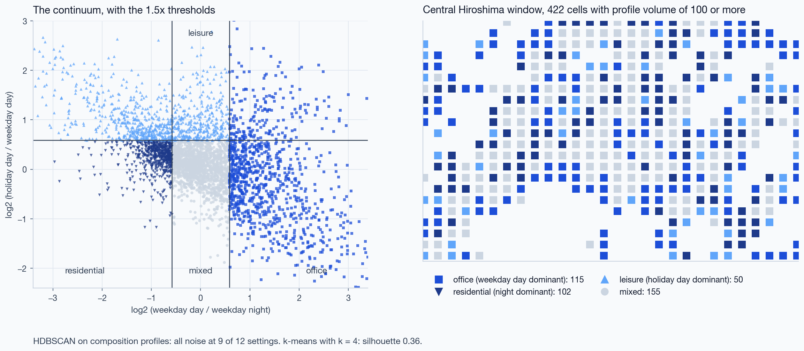
| Class, rule | all cells | window |
|---|---|---|
| office: x ≥ log2 1.5 | 25 % | 115 |
| leisure: y ≥ log2 1.5 | 22 % | 50 |
| residential: x ≤ −log2 1.5 | 16 % | 102 |
| mixed: none of these | 37 % | 155 |
| cells where two rules hold; the first in this order applies | 18 % | |
| entropy of the class shares, nats | 1.34 |
Clustering returns no classes. Thresholds return the share you ask for
Cell values: share of cells that HDBSCAN labels as noise, and the number of clusters, for 12 settings on two representations.
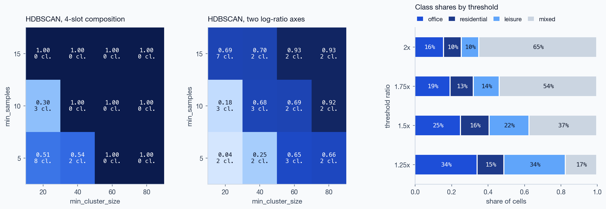
| value | |
|---|---|
| composition: settings with all cells as noise | 9 of 12 |
| two axes: noise share | 4 to 93 % |
| two axes: largest cluster at the loosest setting | 95 % |
| Hopkins statistic | 0.99 |
| k-means silhouette, k = 2 | 0.42 |
| k-means silhouette, k = 4 | 0.36 |
| share of "mixed", ratio 1.25 to 2 | 17 to 65 % |
OpenStreetMap traces. Count minutes, not points
200,000 points is the limit of the request: 40 pages of 5,000.
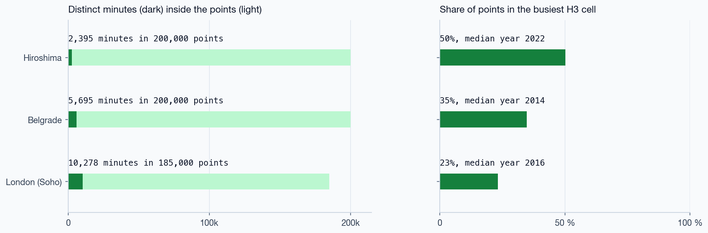
| Window | minutes | median year | busiest cell |
|---|---|---|---|
| Hiroshima | 2,395 | 2022 | 50 % |
| Belgrade | 5,695 | 2014 | 35 % |
| London, Soho | 10,278 | 2016 | 23 % |
Do traces follow people or mapped places? In Hiroshima, 11 shared cells:
| Traces against | Spearman | 95 % interval |
|---|---|---|
| daytime presence | +0.72 | +0.19 to +0.92 |
| mapped places | +0.61 | -0.00 to +0.89 |
The intervals overlap. The test has no power at this size; the question stays open.
Deck v1, audited
56 numbers in the deck prepared for 3 September. 46 reproduced within the rounding of the slide, 10 corrected. Three statements of fact corrected.
| What the deck said | What the pipeline gives | Kind of error |
|---|---|---|
| District level: 0.961 observed, 0.798 random, "80 % is arithmetic" | 0.947 and 0.657; 69 % | computed before people coded at home were removed |
| Most open Dutch region: Delfzijl 0.45 | Zaanstreek 0.45; Delfzijl 0.54 | right number, wrong name |
| Most closed: Zeeuwsch-Vlaanderen 0.88 | Zuid-Limburg 0.88; Zeeuwsch-Vlaanderen 0.85 | right number, wrong name |
| Education-work difference against urban area share: r = −0.28 | −0.28 belongs to work self-containment; for the difference +0.17 | right number, wrong quantity |
| HDBSCAN: 100 % noise | at 9 of 12 settings on composition; never on the two axes | condition left out |
| Work against education: r = 0.82 | 0.80; 0.85 with the 8 structural zeros | no variant gives 0.82 |
| Belgrade, traces against places: +0.67 | +0.72 | cell table regenerated since |
| 235 areas, then 67 after the rule | 235 is 2021; 67 comes from the 197 of 2011. 2021 gives 66 | two years in one sentence |
| Japanese data are operator data of NTT docomo | a panel of smartphone applications; provider Agoop | fact |
| Only Japan publishes time of day | Spain publishes hourly operator matrices | fact |
| Dutch table discontinued after 2014 | successors exist; the current one has municipal pairs | fact |
Which source for which question
| Question | Source that can answer it | Check before use |
|---|---|---|
| Delimitation, commuting structure | census or register pairs at fine units | codes for people without a commute; both nulls; contiguity; census date |
| Self-containment where no pairs exist | destination bands | definition of the migrant; units of one settlement |
| Presence by time of day | panel or operator products | who is in the panel; normalisation; suppression threshold; what "from" means |
| Urbanisation of a unit | population grid with settlement classes | weight by population; epoch of the raster |
| Routes of single recordings | OSM public traces | distinct minutes; concentration; age of traces |
Four tests that need only the open file
- Readthe code list. Where do people without a trip land in the matrix?
- Shuffled + (1 − d) h, then random contiguous partitions.
- Comparethe map with a reference through the error matrix, in people.
- Testfor clusters before naming classes; state the thresholds.
Limits
- One country with pairs. The decomposition is general; its magnitudes are shown for England and Wales only.
- The 2021 census day was a lockdown day.
- Official areas are built from smaller blocks; 332 units are cut.
- The contiguous null is region growing, not a uniform sample. Its partitions have 35 effective areas against 24.
- The official algorithm was not run; nor was the open European implementation.
- The linear form of the validity trade-off is an assumption.
- The trace test has 11 cells.
- GHSL epoch 2030 is a projection: 6.87 million people against about 6.65 million in the census.
- Who is in the Japanese panel is not published. Cells under 10 people are absent.
- The Overture release used has left the public bucket. The aggregate is archived in the repository.
- Spanish hourly operator matrices are not processed.
Next
The open European labour-market-area algorithm on the same matrix. A sampler of contiguous partitions with exact sizes. Dutch municipal pairs. Madrid from hourly matrices. Japanese census pairs for Hiroshima.
Run it
conda env create -f environment.yml
python scripts/fetch_data.py
make all
| What keeps the numbers honest |
|---|
| One parameter file. One file of results. Documents rendered from templates: no number is typed. |
| A frozen snapshot is the regression target of the tests. |
| Reconciliation tests: sums equal published totals, joins are one to one, structural zeros are explained. |
| Input files listed with address, licence and SHA-256. |
| The run repeated in a fresh environment from the lock file gave the same values. |
Repository
github.com/m-erts/urban-functional-maps
Paper
docs/paper/paper.pdf
Licences
Code MIT. Text, figures, slides CC BY 4.0.
Data
Office for National Statistics, OGL v3.0. Statistical Office of the Republic of Serbia. GeoSrbija. Statistics Netherlands, CC BY 4.0. MLIT Japan, provider Agoop. European Commission JRC, GHSL, CC BY 4.0. © OpenStreetMap contributors, ODbL. Overture Maps Foundation, CDLA-Permissive-2.0.
Marija Ercegovac, Rockup. Channel: URBAN_MASH.